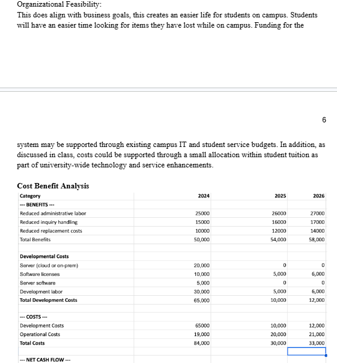
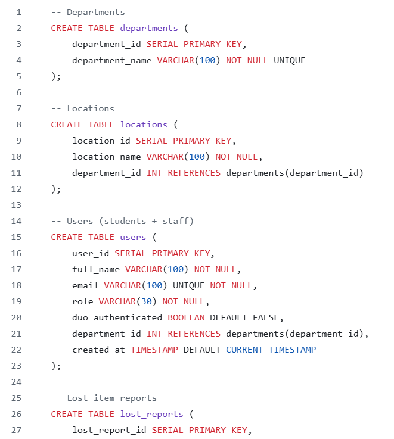
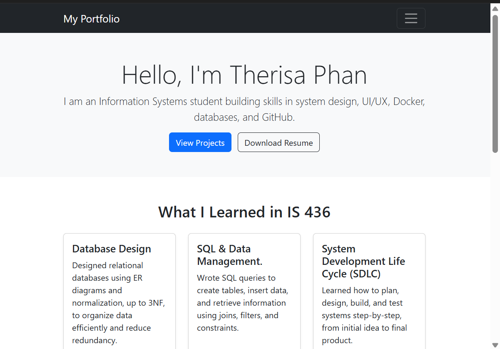

I am an Information Systems student building skills in system design, UI/UX, Docker, databases, and GitHub.
View Projects Download ResumeDesigned relational databases using ER diagrams and normalization, up to 3NF, to organize data efficiently and reduce redundancy.
Wrote SQL queries to create tables, insert data, and retrieve information using joins, filters, and constraints.
Learned how to plan, design, build, and test systems step-by-step, from initial idea to final product.
Created wireframes and applied UI/UX principles to design clean, user-friendly interfaces with clear navigation.
Used Git and GitHub for version control, collaboration, and managing project code.

Designed a project to improve UMBC's lost and found process.

Created a database using Docker and SQL scripts.

Built a Bootstrap portfolio site to showcase skillset, resume, projects, and learning outcomes from IS 436.